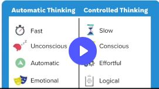

10181
Lesson 1 : Dividened Minds
10월 18일, 분열된 마음
의견 불일치 경험
자신의 의견만을 고집하는 사람들이 답답했다.
고대의 뇌
우리는 첨단 사회에 살고 있으나, 우리의 구석기적 뇌는 업데이트가 안 됐다. 우리 근대의 사회에 적절하게 적응이 덜 되었다.
정신의 지름길 Mental shortcuts
우리의 뇌는 생존하기 위해 정신적 지름길을 발전시켜 왔다. 굉장히 빠르게 정보를 처리하도록.
우리는 여전히 주변 세상에 대해서 정신적 지름길을 이용한다. 원시 뇌에서 사용된 지름길은 현대 사회에서 추론하고 의사결정할 때 똑같은 실수를 반복한다.
Our divided Minds
나 스스로도 두개의 관점에서 논쟁해본적이 있는가?
우리의 뇌는 두가지가 있다. 한가지는 자동처리하는 것이고, 다른 한가지는 통제된 처리이다. 자동방식은 감정과 직관으로 처리하는 것이고 통제방식은 의식과 분석으로 처리하는 것이다.
어딘가에 주의를 기울일 때는 통제방식(계획을 세울 때)

우리의 코끼리…
우리가 어떠한 것을 결정할 때 직관이 먼저고, 분석이나 의식이 나중이다. 우리가 본능적으로 반응하는 것은 코끼리가 이끈 것이다.
우리의 의식, 통제는 우리의 첫인상을 합리화하는 논리에 사용된다.
우리는 착각으로 남긴다. 코끼리가 사고를 결정하고, 합리화를 한 것인데 우리는 심사숙고하여 결정했다고 착각한다.
이것이 중요한 원칙이다. 우리가 전형적으로 생각하는 것에서
직관이 먼저고, 추론은 나중에 합리화한다.
인지편향 Cognitive Bias
확증편향 Confirmation Bias
Step 1. Identify when your elephant is taking charge.내 코끼리가 폭주하고 있는지 확인한다. Step 2. Imagine a different perspective.